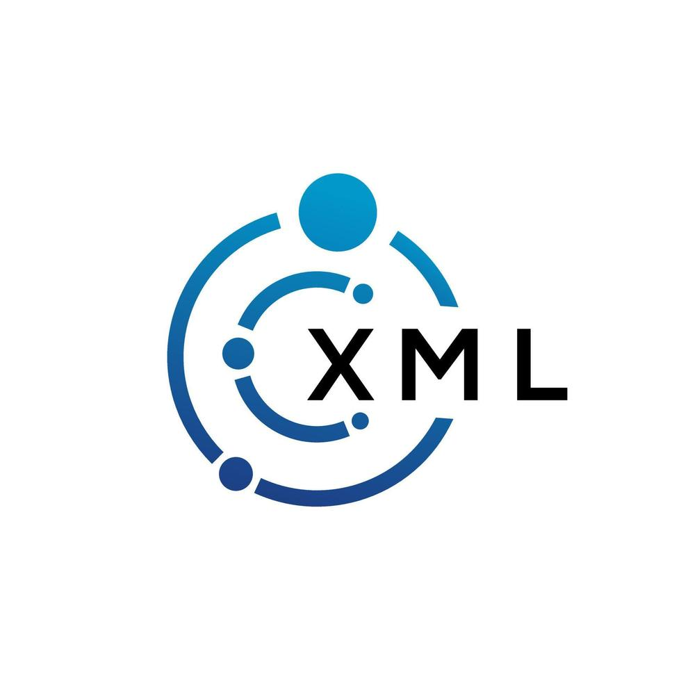

Markup Languages
Markup languages are used to define the structure and presentation of text. They are commonly used in web development and document formatting. HTML is the standard markup language for creating web pages and web applications. XML is a markup language designed to store and transport data. SGML is a standard for defining generalized markup languages for documents. Markdown is a lightweight markup language with plain text formatting syntax that is easy to read and write.
- HTML:
 Standard markup language for creating web pages
Standard markup language for creating web pages - XML:  Markup language for encoding documents
- SGML: Standard Generalized Markup Language
- Markdown: Lightweight markup language